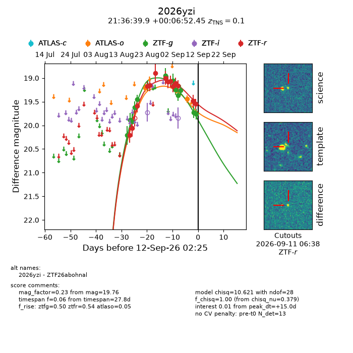
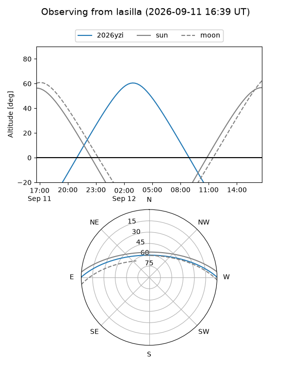
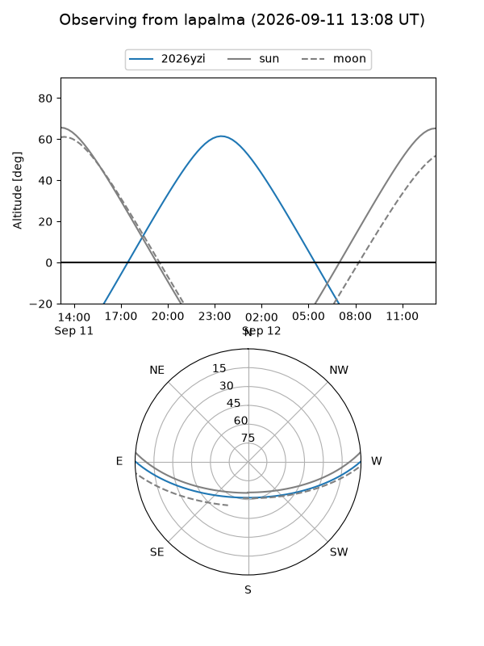
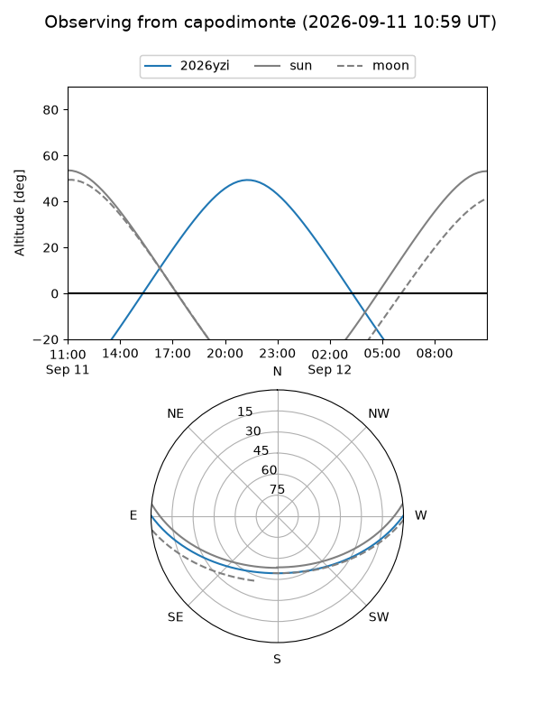
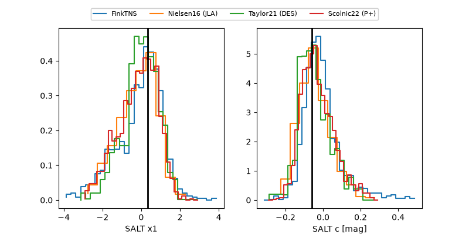

2026yzi
Target 2026yzi at 2026-09-12 02:27
Aliases and brokers:
FINK-ZTF: ztf.fink-portal.org/ZTF26abohnal
Lasair-ZTF: lasair-ztf.lsst.ac.uk/objects/ZTF26abohnal
ALeRCE-ZTF: alerce.online/object/ZTF26abohnal
YSE-PZ: ziggy.ucolick.org/yse/transient_detail/2026yzi
TNS name: wis-tns.org/object/2026yzi
Direct TNS query: direct search
alt names
ZTF26abohnal (ztf,fink_ztf)
2026yzi (tns,yse)
Coordinates:
equatorial (ra, dec) = 324.1661,+0.11457
equatorial (HMS+DMS) = 21:36:39.87,+00:06:52.45
galactic (l, b) = (54.8840,-35.91315)
Flags:
TNS type: SN Ia
TNS redshift: 0.1000
peak dt: +15.0
Photometry:
last atlaso=19.44, ztfg=19.76, ztfr=19.55
2 atlaso, 13 ztfg, 14 ztfr detections
Lightcurve

Visibility



Additional plots
